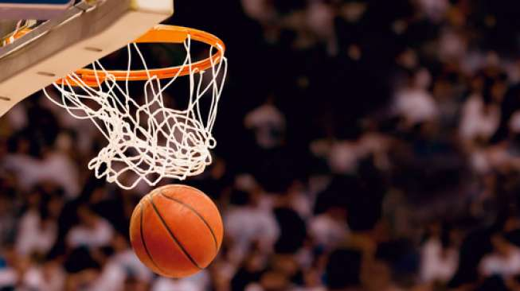

Sejarah Permainan Bola Basket Adalah James Naismith yang mencatatkan namanya dalam sejarah sebagai pencetus permainan bola basket ini. Awalnya ide tersebut muncul karena saat musim dingin, banyak permainan olahraga yang tidak bisa dilakukan oleh para muridnya. Keinginannya untuk membuat sebuah permainan yang dapat dimainkan di dalam ruangan tertutup, menggerakannya untuk membuat permainan bola basket.
Profesinya sebagai instruktur pendidikan jasmani di perguruan tinggi Springfield College yang terletak di Massachusetts, Amerika Serikat, memudahkan Naismith untuk terus berinovasi dalam olahraga hasil kreasinya tersebut.
Di permulaannya, tahun 1891, permainan bola basket dilakukan menggunakan bola sepak. Jadi tidak langsung menggunakan bola basket seperti sekarang ini. Saat itu, Naismith merancang permainan bola basket dengan cara melemparkan bola ke dalam keranjang buah persik. Keranjang yang digantungkan di tembok di gedung olahraga tersebut menjadi penentu skor. Jumlah pemainnya pun setiap tim terdiri dari sembilan orang. Dan saat itu belum ada teknik dribble. Lalu bagaimana donk cara menggiring bola? Caranya dilempar ke teman satu tim. Seiring dengan waktu, permainan ini mulai berkembang. Terutama setelah basket mulai digemari oleh berbagai kalangan dan berbagai macam usia, permainan ini semakin mengalami penyempurnaan-penyempurnaan hingga menjadi seperti permainan bola basket yang sekarang kita kenal.
Permainan ini cepat menyebar ke publik. Dan pada tahun 1895, digelarlah pertandingan bola basket yang pertama kali mempertemukan dua perguruan tinggi, yakni Minnesota School of Agriculture dengan Hamline College.
Meski dilakukan di dalam ruangan, tidak lantas menjadikan permainan bola basket sebagai olahraga yang membiarkan pemainnya bisa bersantai. Tajamnya pandangan, kekuatan nafas, kecepatan berlari, kelihaian dalam mengelabui, kemampuan menembak tepat sasaran, dan ketangkasan tangan menjadi kemampuan yang harus dimiliki agar menjadi pemain bola basket yang baik. Maka jangan heran kalau Grameds bakal mandi keringat saat melakukan permainan ini.
Sejarah mencatat, pada tahun 1920, terjadi eksodus warga negara China ke negara-negara Asia Tenggara, salah satunya Indonesia. Sementara itu, China merupakan salah satu sasaran utama dari Young Men’s Christian Association (YMCA) untuk dijadikan tempat penyebaran permainan bola basket. China yang lebih dulu mengenal permainan bola basket dua puluh tahun sebelumnya, turut membawa permainan ini ke Indonesia saat terjadi eksodus tersebut.
Para perantau tersebut membentuk komunitas sendiri, salah satunya mendirikan sekolah-sekolah untuk warga negara China. Di sekolah-sekolah tersebut, permainan bola basket diajarkan dan menjadi populer.
Kemudian berdirilah komunitas-komunitas basket di beberapa kota besar yang didirikan oleh para perantau ini. Sebut saja Tionghoa Hwee, Fe Leon Ti Yu Hui, Chinese English School dan Pheng Yu Hui (Sahabat). Sahabat merupakan klub asal salah satu legenda basket Indonesia salah satu legenda basket Indonesia, Sony Hendrawan (Liem Tjien Siong). Sejak saat itulah, permainan bola basket juga dimainkan oleh khalayak ramai.
Organisasi yang menaungi bola basket di dunia bernama Federation Internationale de Basketball (FIBA). Organisasi ini berpusat di Jenewa, Swiss. Di kancah nasional, induk permainan bola basket bernama PersatuanBola BasketSeluruhIndonesia (Perbasi) yang berpusat di Jakarta.
Teknik dasar passing dan catching ini berarti adalah teknik dasar yang harus dilakukan secara bergantian, terutama bagi para pemula teknik dasar tersebut harus dipelajari secara baik. Ingat ya Grameds bahwa kemampuan teknik mengoper dan menangkap ini harus sama baiknya, tidak boleh hanya mahir sebagian saja.
Dalam passing terdapat beberapa teknik yaitu:
(operan setinggi dada): operan dimulai dengan memegang bola tepat di depan dada, kemudian dilemparkan ke arah lurus menggunakan telapak tangan arah luar.
(operan pantul): hampir sama dengan Chest Pass, hanya sama dilemparkan ke arah lantai. Usahakan titik pantulnya berada di ¾ jarak dari pengoper bola.
(operan di atas kepala): operan dilakukan dengan kedua tangan berada di atas kepala. Penerima bola juga menangkapnya dengan posisi tangan di atas kepala.
operan dilakukan di atas atau belakang kepala. Tujuannya supaya passing dapat melambung dan melewati lawan.
Teknik ini cukup sulit untuk dilakukan oleh pemula, sehingga membutuhkan banyak latihan. Keunggulan dari teknik adalah supaya lawan tidak mengetahui sasaran yang hendak dituju.
Teknik ini berupa gerakan memantul-mantulkan bola dengan satu tangan terbaik, baik di tempat yang sama maupun ke segala arah. Teknik ini juga dapat dilakukan secara rendah, tinggi, dan campuran. Terdapat beberapa macam teknik dribble, yakni:
penggunaan teknik paling umum dilakukan dan digunakan untuk membuat pemain bertahan berpikir bahwa pelaku dribble akan memperlambat atau mempercepat tempo dribble.
digunakan untuk menjaga bola supaya tetap rendah dan terkontrol. Teknik dribble ini menggunakan telapak tangan yang diusahakan tetap berada di atas bola.
biasanya digunakan ketika berada di lapangan terbuka dan harus bergerak secepatnya bersama bola. Tangan yang digunakan untuk men-dribble tidak berada di atas bola, melainkan di belakang bola.
berupa gerakan memindahkan bola dari tangan satu ke arah tangan lainnya, biasanya untuk memperdaya pemain bertahan. Namun teknik dribble ini berpeluang tercurinya bola oleh lawan sebab posisi bola tidak terjaga.
Terdapat beberapa teknik dalam shooting, yakni:
biasanya dilakukan saat lemparan bebas dengan tanpa adanya rintangan dari pihak lawan.
dilakukan pada jarak beberapa langkah dari ring, kemudian penggiring bola secara serentak mengangkat tangan dan lutut ke arah atas untuk menembakkan bola ke arah keranjang.
dilakukan pada titik tertinggi lompatan vertikal penembak. Biasanya dilakukan ketika pemain tidak dapat mendekati keranjang.
Bentuk: persegi panjang
Panjang: 28 meter
Lebar: 15 meter
Tebal garis samping dan garis pendek: 5 cm
Papan pantul terbuat dari kayu
Panjang: 180 cm
Lebar: 120 cm
Tinggi: 2,75 cm
Keranjang terbuat dari besi yang melingkar dan diberi jala
Ring besi dengan garis tengah: 45 cm
Panjang jaring-jaring pada keranjang: 40 cm
Keliling: 75-78 cm
Berat: 600-650 gram